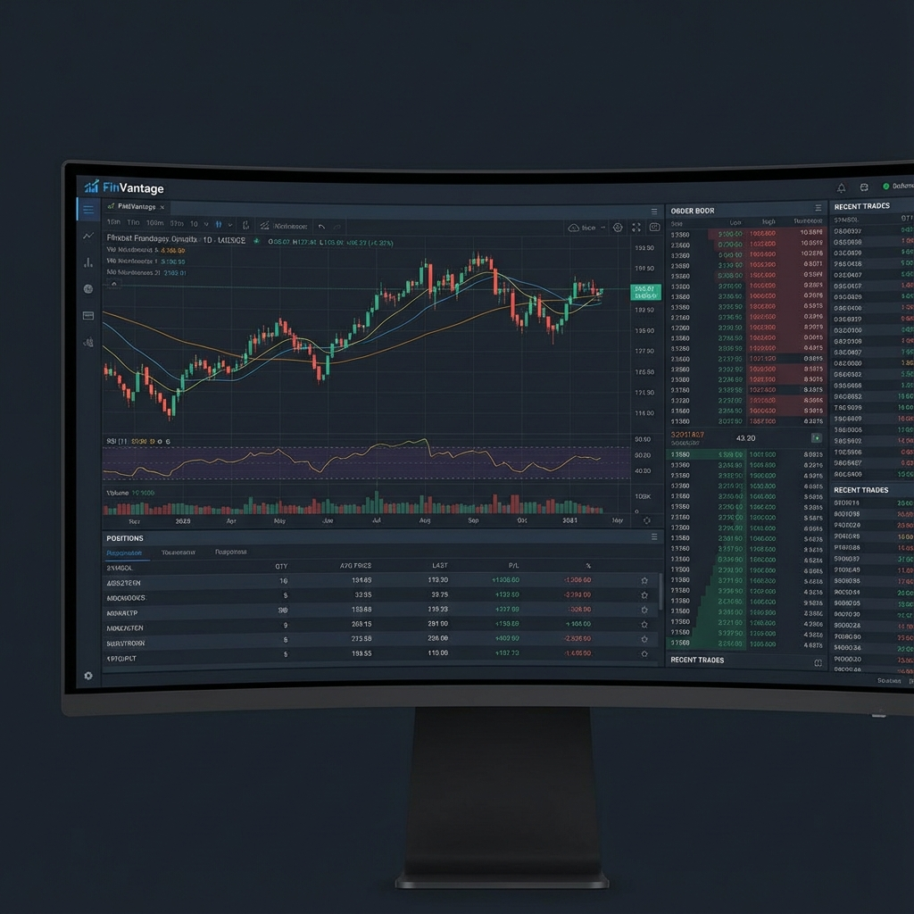

FinVantage
Low-Latency Algorithmic Trading & Analytics Platform

Overview
FinVantage is a high-performance trading platform designed for executing algorithmic strategies in volatile markets. It features a Go-based order matching engine capable of processing 10k orders/second and a React frontend that visualizes market data with sub-50ms latency using WebSocket binary streams.
🚀 Ultra-Low Latency Engine
Core execution service written in Go handles order validation and routing with microsecond-level precision, communicating via gRPC for minimal overhead.
📊 Dynamic Strategy Backtesting
Allows traders to test strategies against 5TB+ of historical tick data stored in TimescaleDB, with results visualizing profitability and drawdowns in seconds.
📡 Real-Time Data Streaming
Built a custom WebSocket gateway that aggregates feeds from multiple exchanges, normalizes the data, and broadcasts diffs to connected clients efficiently.
📉 Risk Management Module
Real-time P&L monitoring with auto-kill switches that trigger if drawdown limits are breached, preventing catastrophic losses.
Technical Challenges & Solutions
Challenge: Visualization Lag
Solution: Rendering high-frequency tick updates caused browser lag. Implemented a WebWorker-based data processing layer and throttled UI repaints to 60fps using `requestAnimationFrame`, ensuring smooth charting even during market spikes.
Challenge: Data Consistency
Solution: Used an event-sourcing pattern for the order book state. Reconstruction of the state is possible at any point by replaying the event log, aiding in debugging and auditing tailored for financial compliance.